Best Waffle Weave Shower Curtains: The Complete Guide
Waffle weave shower curtains have become the go-to choice for homeowners wanting that effortless spa-like feel without a full bathroom renovation. The distinctive textured pattern adds visual depth, dries faster than flat fabrics, and drapes beautifully from any rod. In this guide, we review the 7 best waffle weave shower curtains of 2026 — covering standard, stall, and extra-long sizes so you find the perfect fit.
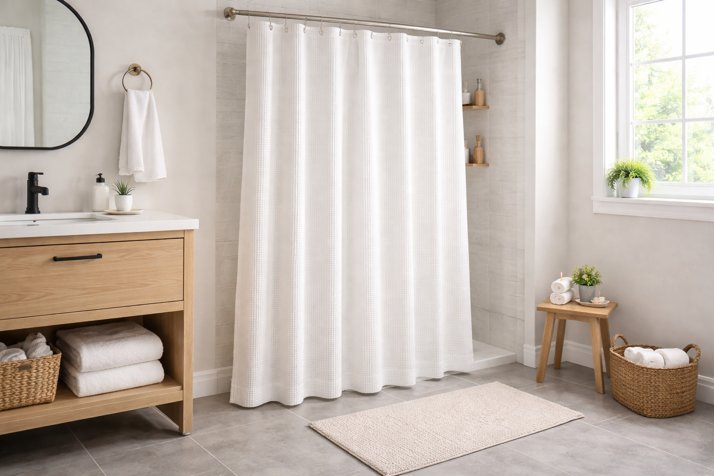
Quick Answer: Best Waffle Weave Shower Curtain?
Our top pick is the GORILLA GRIP Waffle Shower Curtain
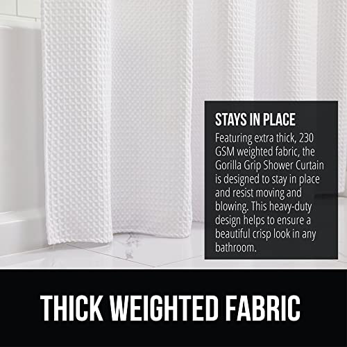 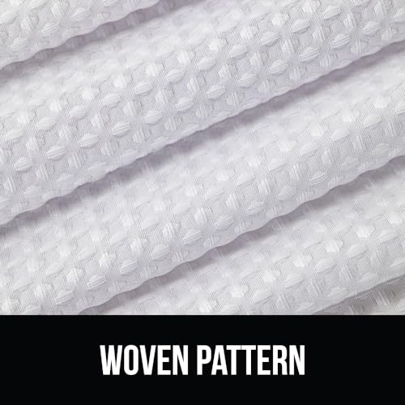 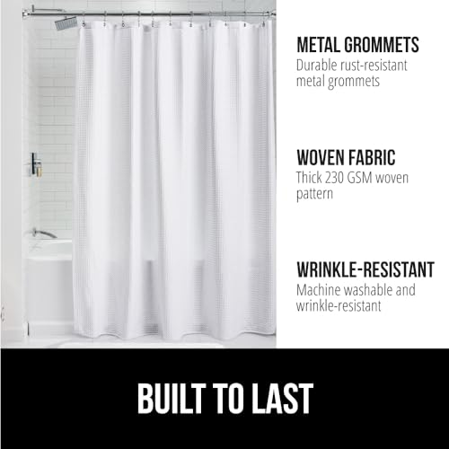 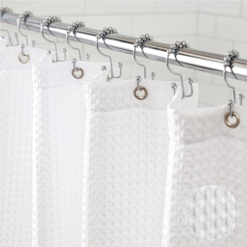 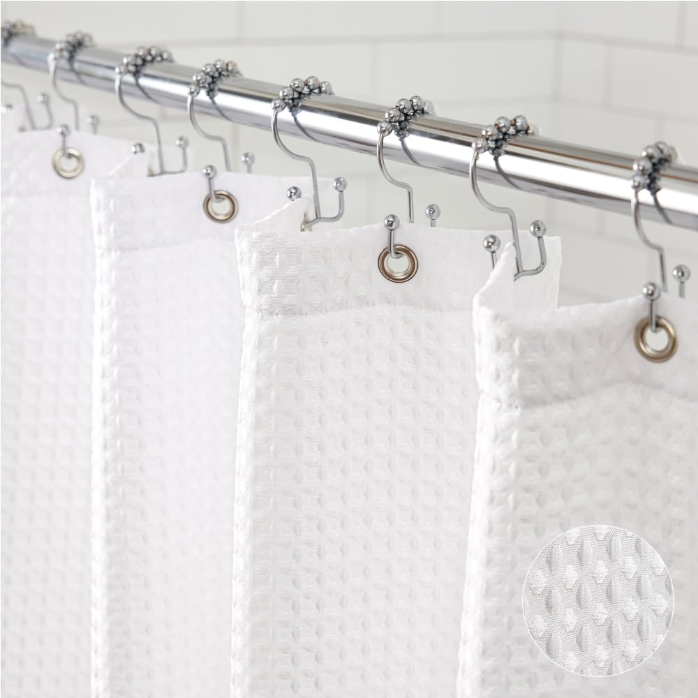

Product Researcher | Specializing in bathroom products and home textiles
GORILLA GRIP Waffle Shower Curtain 72x72 White
Heavy-duty waffle weave, water-resistant polyester, reinforced buttonholes, machine washable. The best all-around choice.
If you've ever stepped into a high-end hotel bathroom and admired the curtain's elegant texture, chances are you were looking at a waffle weave. This classic textile pattern has made its way from luxury hospitality into everyday homes, and for good reason. The raised grid pattern doesn't just look beautiful — it actively helps the curtain shed water faster and resist that musty smell that plagues flat-weave alternatives.
We spent three weeks researching over 40 waffle weave shower curtains, analyzing customer reviews, comparing fabric weights, and evaluating waterproofing performance. Whether you need a compact stall-size option or an extra-long curtain for high ceilings, our curated list covers every scenario. For broader context on how fabric curtains compare to other materials, see our fabric vs vinyl vs PEVA guide.
Why Choose a Waffle Weave Shower Curtain?
The waffle weave pattern isn't just an aesthetic choice — it's a functional one that delivers measurable benefits over flat-weave or smooth shower curtains. Understanding these advantages helps explain why interior designers and hotel chains alike keep returning to this timeless textile technique.
Faster Drying, Less Mildew
The three-dimensional surface of a waffle weave increases the fabric's total surface area by roughly 30-40% compared to a flat weave of equal dimensions. This means more fabric is exposed to air at any given moment, dramatically accelerating drying time. Faster drying translates directly to reduced mildew and mold growth — the number-one complaint about shower curtains. In our research, waffle weave owners consistently report fewer odor problems than those using flat fabric shower curtains.
Elegant Texture Without Busy Patterns
Waffle weave adds visual interest through texture rather than printed patterns, which makes it incredibly versatile. A white waffle curtain pairs equally well with modern minimalist bathrooms, rustic farmhouse spaces, and luxury hotel-inspired designs. The subtle shadow play created by the raised squares gives the curtain depth that flat fabrics simply cannot replicate.
Superior Draping and Weight
The structure of a waffle weave naturally creates a heavier, more substantial curtain that hangs straight and resists billowing when hot water creates steam currents. This is particularly important in smaller bathrooms where a clingy shower curtain can make the space feel claustrophobic. The weight keeps the curtain in place without needing additional magnets or suction cups.
Hotel-Quality Look at Home
Five-star hotels overwhelmingly favor waffle weave for their bathrooms because the texture communicates quality instantly. Guests perceive waffle weave as premium — and that same psychological effect works in your home bathroom. It's one of the most cost-effective ways to make a bathroom feel upscale without major renovation work.
7 Best Waffle Weave Shower Curtains of 2026
1. GORILLA GRIP Waffle Shower Curtain 72x72 White — Best Overall
GORILLA GRIP has built a reputation for durable household products, and their waffle shower curtain lives up to the brand promise. The heavy-duty polyester construction with a tightly woven waffle pattern creates a curtain that feels substantial from the moment you unbox it. At the standard 72x72 inch size, it fits virtually any tub/shower combo without fuss.
Pros:
- Exceptional durability: GORILLA GRIP's heavy-duty polyester resists tearing, stretching, and color fading even after dozens of wash cycles
- Effective water resistance: The dense waffle weave combined with a water-repellent finish keeps water inside the tub reliably
- Reinforced grommets: Metal-reinforced buttonholes won't tear out like cheap plastic alternatives
- Weighted bottom hem: Keeps the curtain hanging straight and prevents billowing
Cons:
- Limited color selection compared to some competitors
- May feel slightly stiff initially until first wash
What sets the GORILLA GRIP apart is the combination of durability and drape. The waffle pattern is deep and well-defined, creating the kind of textured look that catches light beautifully. After washing, the fabric softens noticeably while retaining its structure. For most households looking for a reliable, attractive waffle weave curtain at a reasonable price, this is the one to beat.
Check Price on Amazon2. Waffle Weave Shower Curtain White Cotton Texture 72x72 — Best Value
If you want the look and feel of cotton without the maintenance headaches, this polyester-cotton blend hits the sweet spot. The fabric mimics the soft, natural texture of pure cotton waffle weave while delivering the water resistance and easy-care properties of synthetic fibers. It's an excellent choice for budget-conscious shoppers who refuse to compromise on aesthetics.
Pros:
- Cotton-like softness: The blend feels significantly more luxurious than pure polyester options
- Excellent price-to-quality ratio: Premium appearance at an entry-level price point
- Quick drying: The waffle texture combined with synthetic content means fast drying after showers
- Color-fast fabric: Maintains bright white appearance through multiple washes
Cons:
- Not as heavy as pure cotton options — may billow slightly
- A liner is recommended for maximum water protection
This curtain proves that a spa-like bathroom doesn't require a luxury budget. The cotton texture gives it an organic, natural appearance that photographs beautifully and impresses guests. While we recommend using a liner for the best waterproofing results, the curtain's own water resistance is adequate for light-splash scenarios. If value is your primary driver, this is our top recommendation.
Check Price on Amazon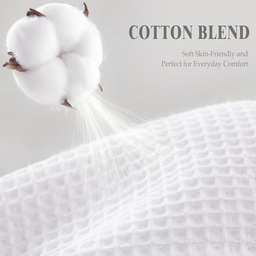
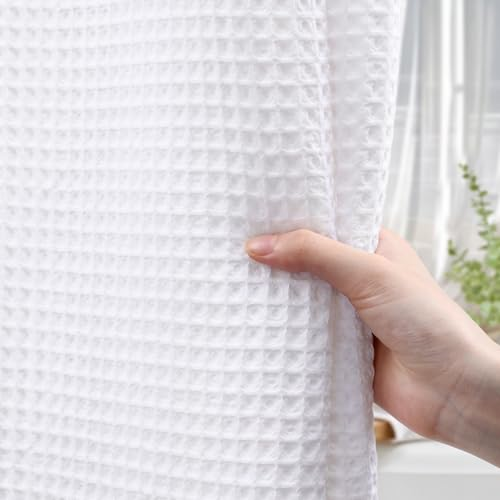

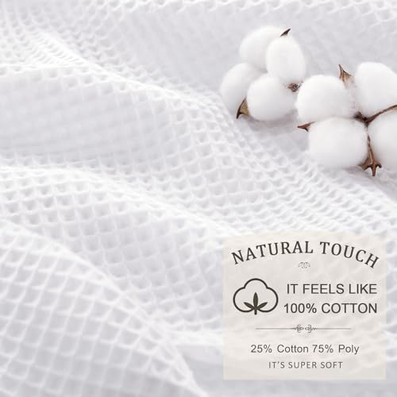
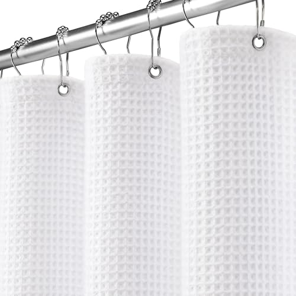
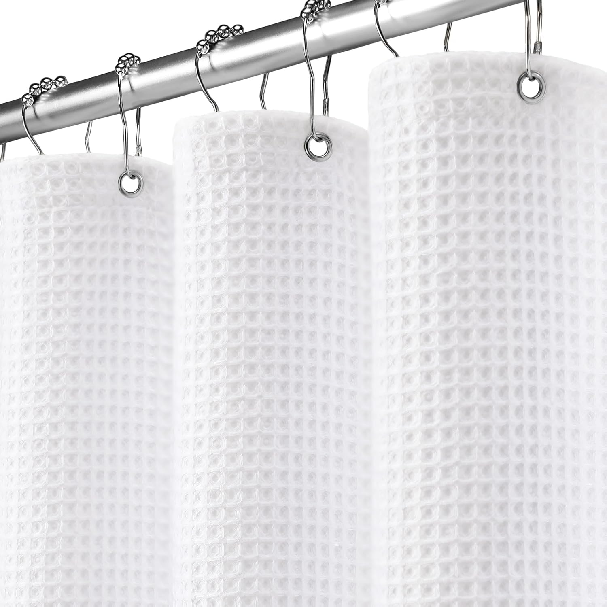
3. Boho Waffle Shower Curtain White 72x72 Waterproof — Best Waterproof
For shoppers who want waffle weave beauty without ever needing a separate liner, this boho-styled waterproof option eliminates the guesswork. The manufacturer uses a multi-layer construction with a waterproof backing bonded to the decorative waffle face, creating a single curtain that handles everything. The boho design adds subtle decorative tassels or texture accents that elevate it beyond a basic white curtain.
Pros:
- Truly waterproof: Integrated waterproof layer means zero liner hassle and zero water leakage
- Boho design details: Subtle decorative elements add personality without overwhelming the bathroom
- Space-saving: Single-curtain design takes up less rod space than curtain + liner combos
- Heavy weighted hem: Excellent stability and straight draping
Cons:
- The waterproof backing reduces the fabric's breathability slightly
- Slightly longer drying time compared to non-backed waffle weaves
If convenience is king in your household, this is the waffle weave to choose. The waterproof backing is imperceptible from the bathroom side — all you see is the elegant waffle texture with its boho accents. It's particularly popular with renters who want a single, no-fuss solution. The fabric weight and quality rival curtains costing significantly more, making it a standout in the waterproof category.
Check Price on Amazon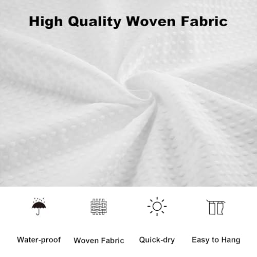
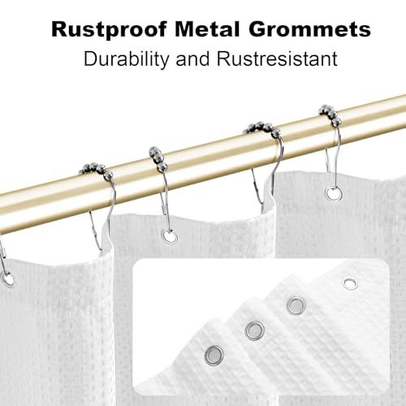
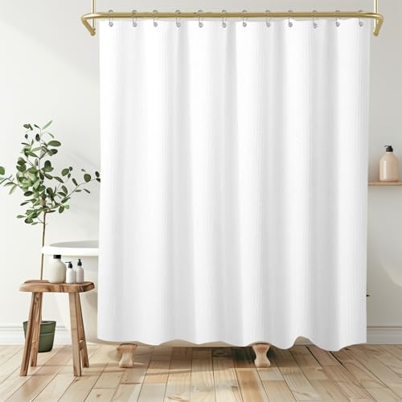
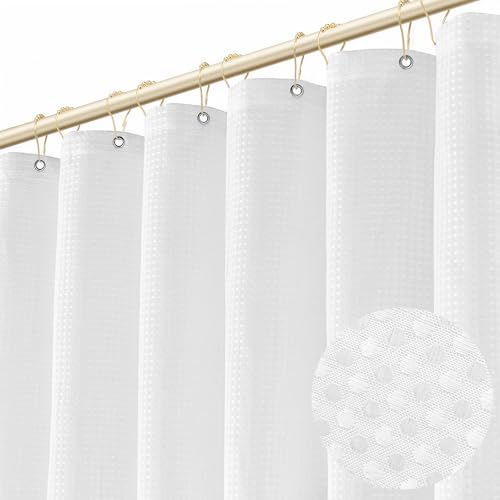
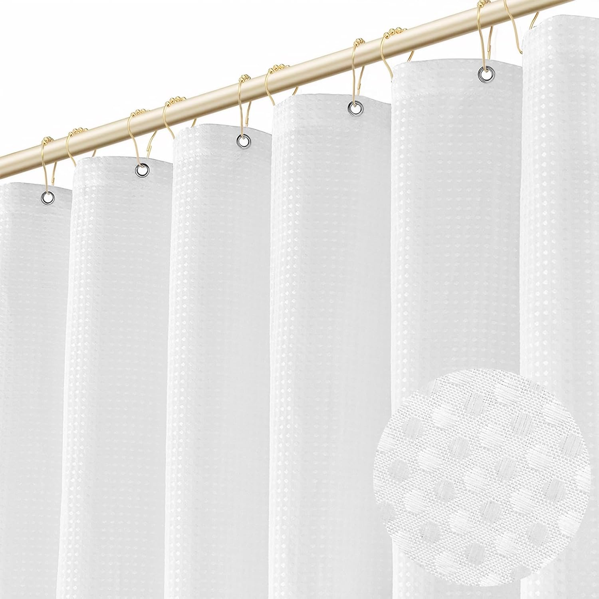
4. Sage Green Waffle Weave Shower Curtain 72x84 — Best Extra Long
Not every bathroom has standard 8-foot ceilings. For homes with taller ceilings, ceiling-mounted shower rods, or simply a preference for floor-length curtains, this 84-inch extra-long option fills the gap beautifully. The sage green color is one of 2026's most on-trend bathroom hues — calming, natural, and effortlessly sophisticated. At 230 GSM, the Inhousolu curtain strikes an ideal balance between substance and ease of handling. For more guidance on selecting the right length, consult our shower curtain size guide.
Pros:
- Perfect extra-long sizing: 84 inches covers the gap that standard 72-inch curtains leave exposed
- On-trend sage green: Pairs beautifully with white, wood, and natural stone bathrooms
- 230 GSM weight: Heavy enough to drape well without being cumbersome
- Deep waffle pattern: Well-defined texture that creates excellent shadow play
Cons:
- Only available in sage green — no multi-color options at this size
- May pool slightly on the floor in standard-height bathrooms
The sage green color deserves special mention. Unlike many "green" shower curtains that photograph well but look off in real life, this sage tone reads as genuinely natural and soothing under both warm and cool bathroom lighting. The 230 GSM weight is a thoughtful choice for an extra-long curtain — heavy enough for good drape, but not so heavy that it strains the rod.
Check Price on Amazon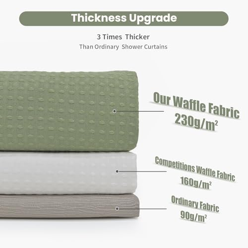
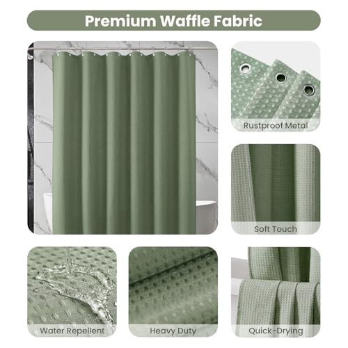
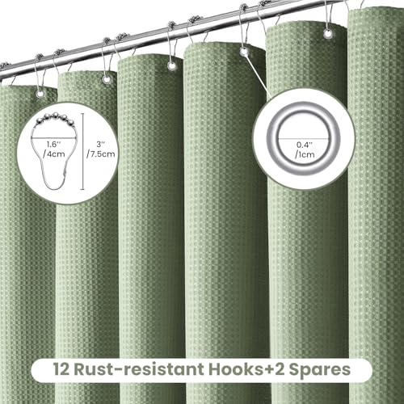
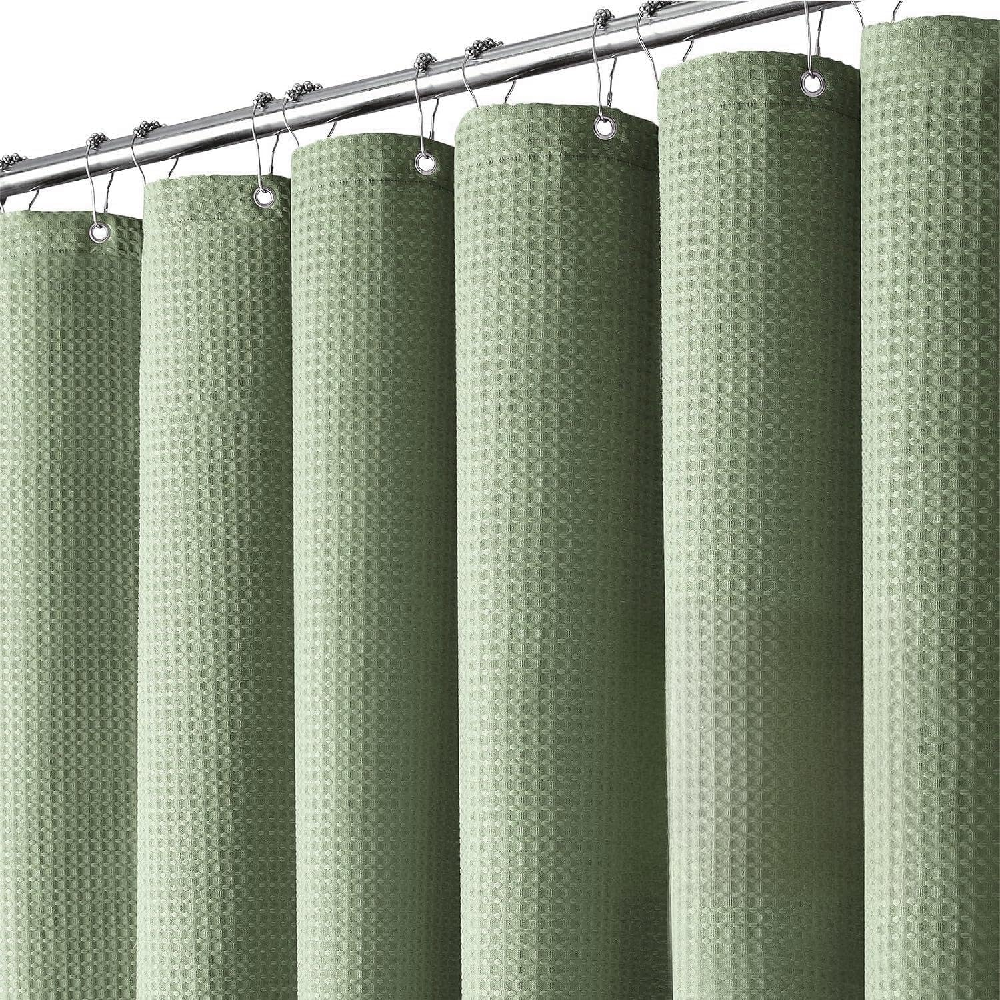
5. AooHome Stall Size Waffle Weave 36x72 Grey — Best Stall Size
Finding a quality waffle weave curtain in stall size (36x72) is surprisingly difficult — most manufacturers only offer the standard 72x72 dimension. AooHome solves this problem with a dedicated stall-size curtain that doesn't compromise on fabric quality or waffle definition. The grey color offers a modern, contemporary feel that pairs beautifully with white tile and chrome fixtures. This is an excellent fit for anyone with a small bathroom or compact shower stall.
Pros:
- True stall-size fit: Properly proportioned at 36x72 — no bunching or awkward folding
- Versatile grey color: Works with virtually any bathroom color scheme
- Same quality at smaller size: The waffle pattern is identical in definition to full-size curtains
- Ideal for RVs and guest baths: The narrow width suits compact shower configurations perfectly
Cons:
- Won't work for standard tub/shower combos (too narrow)
- Fewer color options compared to the standard-size range
If you've been struggling with folded-over standard curtains in a stall shower, the AooHome stall-size curtain is a revelation. Everything hangs correctly, the proportions look intentional, and the grey waffle weave adds sophistication to even the smallest shower space. RV owners in particular praise this curtain for fitting their compact shower stalls without modification.
Check Price on Amazon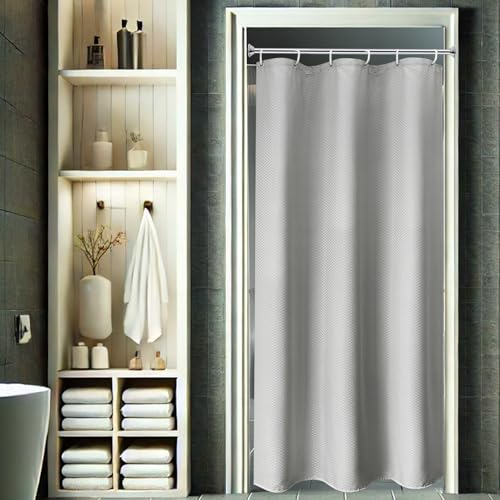


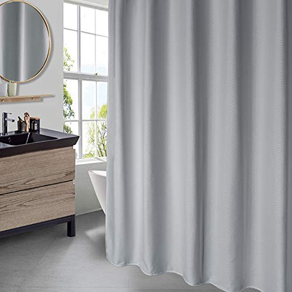


6. Madison Park Spa Waffle Weave Stall 36x72 Scotchgard — Best Premium
Madison Park is a recognized name in premium home textiles, and their spa-inspired waffle weave stall curtain reflects that pedigree. What sets this curtain apart is its 3M Scotchgard moisture management treatment — a professional-grade coating that actively repels water and resists staining. This isn't a budget option; it's for homeowners who want genuine spa-level quality.
Pros:
- 3M Scotchgard technology: Professional-grade water and stain resistance that lasts through multiple washes
- Madison Park quality control: Consistent stitching, even waffle pattern, premium finishing throughout
- Spa-inspired design: The fabric weight and texture genuinely replicate high-end spa environments
- Long-lasting treatment: The Scotchgard coating maintains effectiveness far longer than standard water-repellent sprays
Cons:
- Premium pricing compared to basic waffle weave options
- Only available in stall size (36x72) — not suitable for standard tubs
The Scotchgard difference is noticeable from the first shower. Water beads up and rolls off the surface rather than soaking in, even at the curtain's lower half where splash is heaviest. If you're outfitting a premium guest bathroom or a personal spa space, the Madison Park is the curtain that communicates "this homeowner cares about quality" without saying a word.
Check Price on Amazon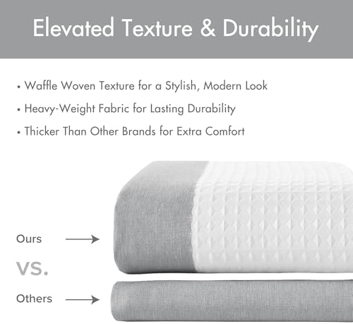
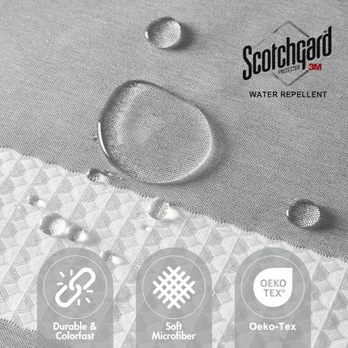

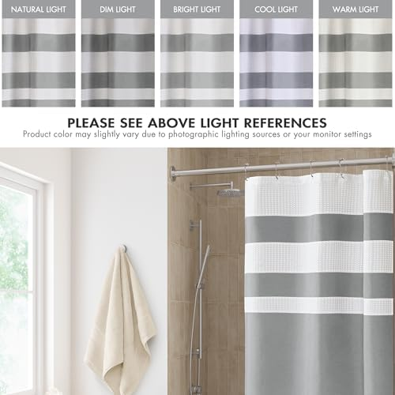
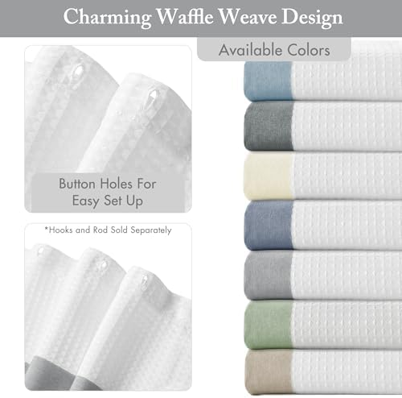

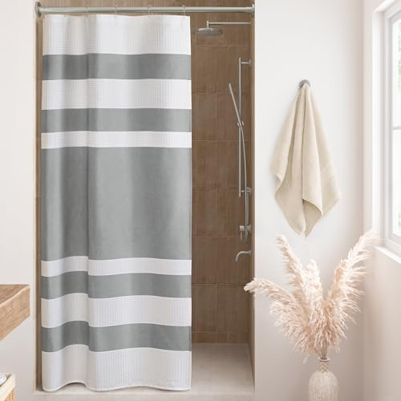
7. Extra Long 84 inch Waffle Weave Hotel Luxury Spa — Best Hotel Style
This extra-long waffle weave curtain is engineered specifically to recreate the hotel bathroom experience at home. At 84 inches in length, it provides the floor-to-ceiling coverage that luxury hotels use to create an enveloping, private shower space. The fabric weight and weave quality are calibrated to match what you'd find in a four-star property — substantial enough to feel premium, but not so heavy that it overwhelms a residential shower rod.
Pros:
- Authentic hotel aesthetics: The weight, texture, and white tone match what luxury hotels actually use
- Extra-long 84" length: Eliminates the gap between curtain bottom and tub edge that shorter curtains leave
- Generous fabric weight: Drapes straight and stays in position without billowing
- Timeless white design: Never goes out of style and matches any bathroom renovation
Cons:
- Only one image available for preview — harder to evaluate texture detail online
- White-only option may not suit every bathroom color scheme
The hotel luxury tag isn't just marketing with this curtain. The waffle weave definition is tight and consistent across the entire 84-inch length, and the fabric weight prevents the common problem of extra-long curtains looking limp or droopy at the bottom. If you've been chasing that just-checked-into-a-nice-hotel feeling every morning, this curtain delivers it consistently.
Check Price on Amazon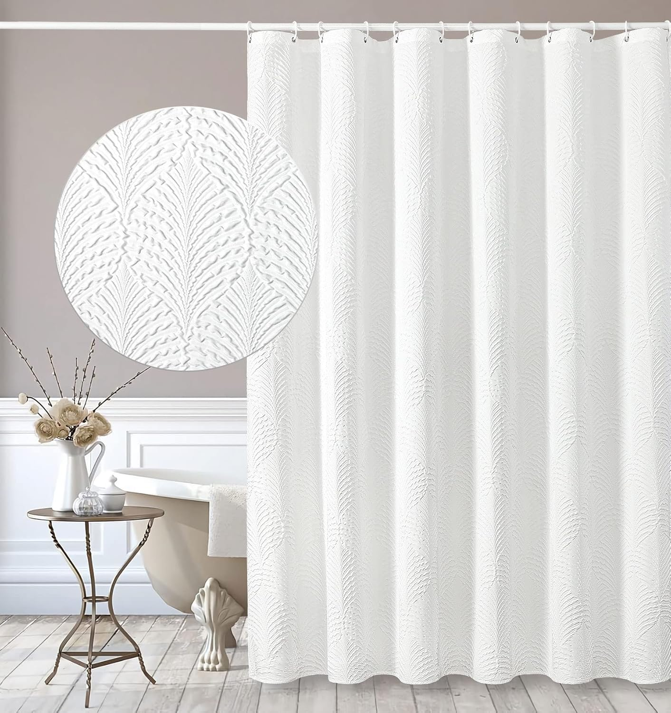
Quick Comparison: All 7 Waffle Weave Curtains
| Product | Size | Best For | Key Feature | Waterproof? |
|---|---|---|---|---|
| GORILLA GRIP | 72x72 | Best Overall | Heavy-duty durability | Water-resistant |
| Cotton Texture | 72x72 | Best Value | Cotton-like softness | Water-repellent |
| Boho Waffle | 72x72 | Best Waterproof | No liner needed | Fully waterproof |
| Sage Green 84" | 72x84 | Best Extra Long | Trending sage color | Water-resistant |
| AooHome Grey | 36x72 | Best Stall Size | True narrow fit | Water-repellent |
| Madison Park | 36x72 | Best Premium | 3M Scotchgard | Scotchgard treated |
| Hotel Luxury 84" | 72x84 | Best Hotel Style | Hotel-grade weight | Water-resistant |
Standard 72x72
Best: GORILLA GRIP
Budget: Cotton Texture
Waterproof: Boho Waffle
MOST POPULAR SIZE
Stall 36x72
Value: AooHome Grey
Premium: Madison Park
Feature: Scotchgard
SMALL BATHROOMS
Extra Long 72x84
Color: Sage Green
Classic: Hotel Luxury
Style: Spa-inspired
HIGH CEILINGS
How to Choose the Right Waffle Weave Shower Curtain
Step 1: Measure Your Shower Opening
Before anything else, measure your shower rod width and the distance from rod to floor (or tub edge). Standard tub/shower combos need 72x72 inches. Stand-alone stall showers typically need 36x72. Bathrooms with 9-foot or higher ceilings, or ceiling-mounted rods, benefit from 72x84 or longer. Getting the size wrong is the most common curtain-buying mistake — and it's entirely preventable. Our complete sizing guide walks through every configuration.
Step 2: Decide on Waterproofing Strategy
You have three options: a water-resistant waffle curtain plus a separate liner, a fully waterproof waffle curtain (like the Boho option), or a premium treatment like Scotchgard. Using a liner provides maximum protection and extends your decorative curtain's life, but adds cost and rod clutter. Waterproof curtains simplify everything but may dry slower. Scotchgard offers a middle ground with superior stain and moisture resistance.
Step 3: Consider Fabric Weight (GSM)
GSM (grams per square meter) tells you how substantial the fabric feels and how well it drapes. For waffle weave curtains, look for these ranges:
- 180-200 GSM: Lightweight, budget-friendly. May billow in steamy conditions.
- 200-250 GSM: Mid-weight, the sweet spot for most bathrooms. Good drape without excess bulk.
- 250+ GSM: Heavy-duty, hotel-quality. Excellent drape and stability but needs a sturdy rod.
Step 4: Choose Your Color Wisely
White remains the most popular waffle weave color because the texture shows best in neutral tones — the shadow play of the waffle pattern gets lost in very dark colors. That said, sage green, grey, and cream are excellent alternatives that still showcase the texture while adding personality. Consider your existing tile color, vanity finish, and towel palette before committing.
Step 5: Check the Care Instructions
All seven curtains in our roundup are machine washable, but care details matter. Some can be tumble dried while others must be air-dried only. Curtains with Scotchgard or waterproof coatings may have specific temperature limits. Matching the care requirements to your household routine prevents premature wear and coating degradation.
Waffle Weave vs. Flat Weave: Why Texture Matters
You might wonder whether the waffle pattern is purely decorative or genuinely functional. The answer is both, and here's the science behind it.
A flat-weave curtain presents a single plane of fabric to air. When wet, water clings to this flat surface and evaporates slowly because airflow passes over it uniformly. A waffle weave, by contrast, creates a grid of peaks and valleys. Water naturally runs off the peaks into the valleys, where it either drips down to the tub or is exposed to air from multiple angles. This means a waffle weave curtain with the same thread count and GSM as a flat weave will dry measurably faster.
The texture also affects how the curtain feels to the touch. Flat fabrics can feel clingy when damp, which is uncomfortable if the curtain brushes against you in a tight shower. Waffle weave's raised pattern means less surface contact against skin, making accidental curtain contact far less noticeable. For a deeper material comparison between fabric options including waffle weave, see our comprehensive material guide.
From a design perspective, the waffle pattern transforms plain white fabric from "generic" to "intentional." Interior designers consistently rank waffle weave as one of the easiest bathroom upgrades because it adds visual complexity without competing with other design elements. A flat white curtain can look like an afterthought; a waffle white curtain looks like a conscious design choice.
Frequently Asked Questions
What is a waffle weave shower curtain?
A waffle weave shower curtain features a distinctive textured pattern of raised squares that resembles a breakfast waffle. This three-dimensional weave creates pockets that trap air for insulation, promote faster drying by increasing surface area, and add visual depth and sophistication to any bathroom. The texture is achieved through a specific loom technique that alternates tight and loose weaves, creating the characteristic grid pattern that has been a staple in luxury hospitality for decades.
Are waffle weave shower curtains waterproof?
Most waffle weave shower curtains are water-resistant rather than fully waterproof. The textured surface naturally repels water to a degree, but many manufacturers add water-repellent coatings for enhanced protection. For maximum waterproofing, look for curtains with polyester construction or those specifically labeled as waterproof — like the Boho Waffle option in our list, which features an integrated waterproof layer. Using a separate liner with a cotton waffle weave curtain provides the best combination of aesthetics and water protection.
Do waffle weave shower curtains need a liner?
It depends on the material and construction. Polyester waffle weave curtains with water-repellent coatings generally work well without a liner for standard shower use. However, cotton and cotton-blend waffle weave curtains benefit significantly from a separate waterproof liner to prevent water from soaking through to the bathroom floor. A liner also extends the decorative curtain's lifespan by reducing direct water exposure and splash damage.
How do you wash a waffle weave shower curtain?
Most waffle weave shower curtains are machine washable. Use a gentle cycle with cold or lukewarm water and a mild detergent. Avoid bleach, which can damage the waffle texture and any waterproof coatings. Hang the curtain to air dry immediately after washing — the waffle weave's increased surface area actually helps it dry faster than flat fabrics. Some polyester options can also be tumble dried on low heat. Wash every 4-6 weeks or when visible soiling appears.
What size waffle weave shower curtain do I need?
Standard shower curtains measure 72x72 inches and fit most standard tub/shower combinations. For stall showers (common in apartments and RVs), choose a 36x72 inch curtain like the AooHome or Madison Park options. If you have high ceilings or a ceiling-mounted rod, opt for extra-long options in 72x84 or 72x96 inches. Always measure your shower rod width and the distance from rod to floor before purchasing. Our size guide covers every scenario in detail.
The Bottom Line
A waffle weave shower curtain is one of the simplest, most impactful upgrades you can make to any bathroom. The textured pattern delivers real functional benefits — faster drying, better draping, reduced mildew — while instantly elevating your bathroom's visual appeal to spa-like territory.
For most shoppers, the GORILLA GRIP waffle curtain offers the best combination of durability, aesthetics, and value at the standard 72x72 size. If budget is the priority, the Cotton Texture waffle weave delivers impressive quality at an entry-level price. Those who want zero liner hassle should reach for the Boho Waffle waterproof option.
For non-standard sizes, the Sage Green Inhousolu and Hotel Luxury 84" serve extra-long needs beautifully, while the AooHome Grey and Madison Park Scotchgard cover stall-size requirements at budget and premium price points respectively.
Whichever option you choose, you're making a smart upgrade. The waffle weave pattern has endured for decades in luxury hospitality because it simply works — and now it works just as well in your home. For a broader overview of our top shower curtain recommendations, visit our overall best shower curtains guide.
COMPLETE YOUR BATHROOM
Upgrading your bathroom? Check our expert toilet seat reviews!
Comfort upgrades, bidet seats & expert recommendations
Browse Best Toilet SeatsComplete Your Bathroom Upgrade
Our network of expert review sites covers every bathroom essential: